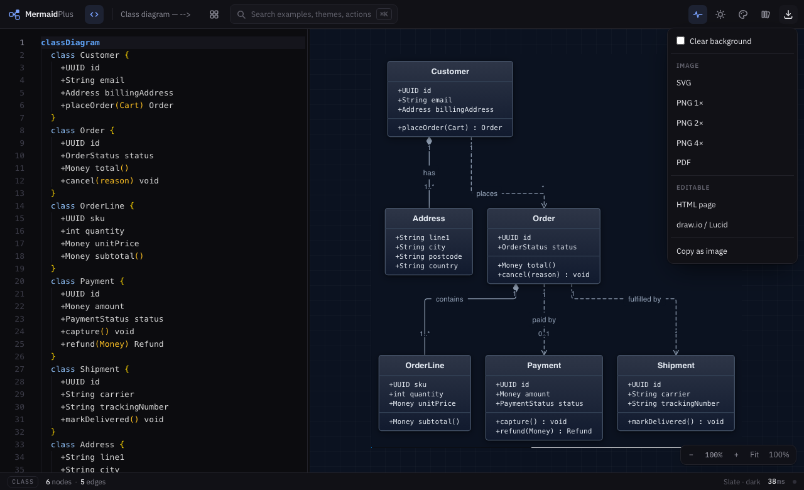

Chapter 7
Exporting
Every format is the same picture. What differs is what the person on the other end can do with it — and one of them is not a picture at all.

| Format | What it is for |
|---|---|
| SVG | Docs and wikis. Styles are inlined and no CSS variables are left to resolve, so it renders anywhere |
| PNG 1× 2× 4× | Slides, issues, chat. 2× for a retina screen, 4× for print |
| Attachments and printing. Vector, so it stays sharp | |
| HTML page | One standalone file that keeps pan, zoom, the motion, and the source it came from |
| draw.io / Lucid | Real shapes and connections. Editable on the other side, not a picture of a diagram |
| Copy as image | Straight into Slack, a doc, an email |
Clear background
The checkbox at the top of the menu drops the ground — both the background and the diagram's own canvas — so the export sits on whatever colour your slide is. It is remembered, so the next export is not a surprise.
The HTML page
This is the interesting one. It is a single file with the diagram, the pan and zoom controls, the travelling highlights, and the Mermaid source folded underneath. Email it to somebody with no tools installed and they can still explore the diagram and read where it came from.
draw.io and Lucid
This export writes the model, not the picture: each node is a real shape with real geometry, each edge a real connection between two of them, and subgraphs are real containers. Open it in diagrams.net or import it into Lucid and you can move things.
It is a one-way trip. Once a diagram is edited in draw.io, the Mermaid source is no longer the source of truth. Export this way when you are handing over to somebody who does not write Mermaid, not as a round trip.
Available for graph-shaped diagrams — flowchart, class, ER, state, mindmap, requirement, C4 — since those are the ones with a model to export.
Everything is frozen except the HTML
Static formats are captured still. A frozen frame of a travelling highlight is not the diagram anyone meant to save, so the animation is switched off for SVG, PNG and PDF. The HTML page keeps it, being the one format that can move.